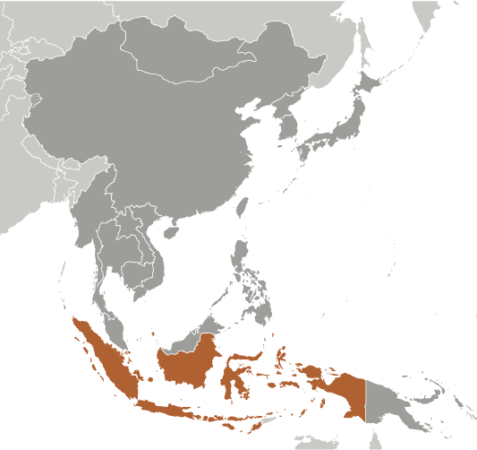
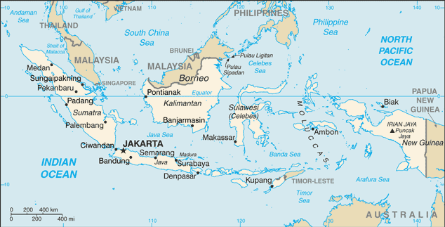
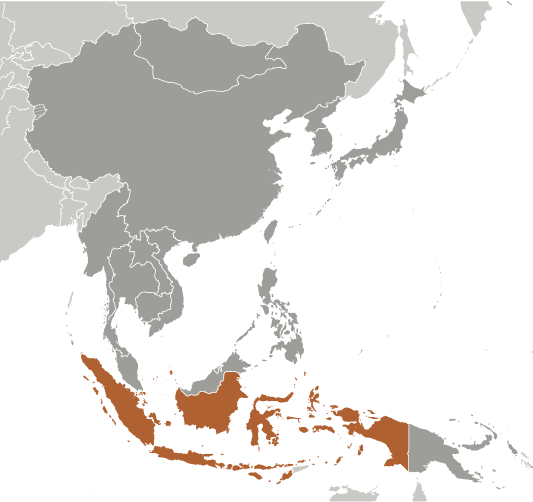
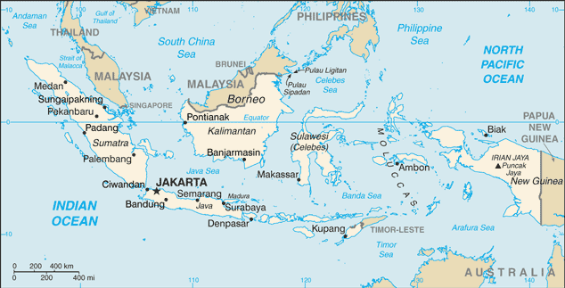

East & Southeast Asia :: INDONESIA
Introduction :: INDONESIA
-
The Dutch began to colonize Indonesia in the early 17th century; Japan occupied the islands from 1942 to 1945. Indonesia declared its independence shortly before Japan's surrender, but it required four years of sometimes brutal fighting, intermittent negotiations, and UN mediation before the Netherlands agreed to transfer sovereignty in 1949. A period of sometimes unruly parliamentary democracy ended in 1957 when President SOEKARNO declared martial law and instituted "Guided Democracy." After an abortive coup in 1965 by alleged communist sympathizers, SOEKARNO was gradually eased from power. From 1967 until 1998, President SUHARTO ruled Indonesia with his "New Order" government. After street protests toppled SUHARTO in 1998, free and fair legislative elections took place in 1999. Indonesia is now the world's third most populous democracy, the world's largest archipelagic state, and the world's largest Muslim-majority nation. Current issues include: alleviating poverty, improving education, preventing terrorism, consolidating democracy after four decades of authoritarianism, implementing economic and financial reforms, stemming corruption, reforming the criminal justice system, addressing climate change, and controlling infectious diseases, particularly those of global and regional importance. In 2005, Indonesia reached a historic peace agreement with armed separatists in Aceh, which led to democratic elections in Aceh in December 2006. Indonesia continues to face low intensity armed resistance in Papua by the separatist Free Papua Movement.
Geography :: INDONESIA
-
Southeastern Asia, archipelago between the Indian Ocean and the Pacific Ocean5 00 S, 120 00 ESoutheast Asiatotal: 1,904,569 sq kmland: 1,811,569 sq kmwater: 93,000 sq kmcountry comparison to the world: 16slightly less than three times the size of Texastotal: 2,958 kmborder countries (3): Malaysia 1,881 km, Papua New Guinea 824 km, Timor-Leste 253 km54,716 kmmeasured from claimed archipelagic straight baselinesterritorial sea: 12 nmexclusive economic zone: 200 nmtropical; hot, humid; more moderate in highlandsmostly coastal lowlands; larger islands have interior mountainsmean elevation: 367 melevation extremes: lowest point: Indian Ocean 0 mhighest point: Puncak Jaya 4,884 mpetroleum, tin, natural gas, nickel, timber, bauxite, copper, fertile soils, coal, gold, silveragricultural land: 31.2%arable land 13%; permanent crops 12.1%; permanent pasture 6.1%forest: 51.7%other: 17.1% (2011 est.)67,220 sq km (2012)major concentration on the island of Java, which is considered one of the most densely populated places on earth; of the outer islands (those surrounding Java and Bali), Sumatra contains some of the most significant clusters, particularly in the south near the Selat Sunda, and along the northeastern coast near Medan; the cities of Makasar (Sulawesi), Banjarmasin (Kalimantan) are also heavily populatedoccasional floods; severe droughts; tsunamis; earthquakes; volcanoes; forest firesvolcanism: Indonesia contains the most volcanoes of any country in the world - some 76 are historically active; significant volcanic activity occurs on Java, Sumatra, the Sunda Islands, Halmahera Island, Sulawesi Island, Sangihe Island, and in the Banda Sea; Merapi (2,968 m), Indonesia's most active volcano and in eruption since 2010, has been deemed a Decade Volcano by the International Association of Volcanology and Chemistry of the Earth's Interior, worthy of study due to its explosive history and close proximity to human populations; other notable historically active volcanoes include Agung, Awu, Karangetang, Krakatau (Krakatoa), Makian, Raung, and Tamboradeforestation; water pollution from industrial wastes, sewage; air pollution in urban areas; smoke and haze from forest firesparty to: Biodiversity, Climate Change, Climate Change-Kyoto Protocol, Desertification, Endangered Species, Hazardous Wastes, Law of the Sea, Ozone Layer Protection, Ship Pollution, Tropical Timber 83, Tropical Timber 94, Wetlandssigned, but not ratified: Marine Life Conservationaccording to Indonesia's National Coordinating Agency for Survey and Mapping, the total number of islands in the archipelago is 13,466, of which 922 are permanently inhabited (Indonesia is the world's largest country comprised solely of islands); the country straddles the equator and occupies a strategic location astride or along major sea lanes from the Indian Ocean to the Pacific Ocean; despite having the fourth largest population in the world, Indonesia is the most heavily forested region on earth after the Amazon
People and Society :: INDONESIA
-
260,580,739 (July 2017 est.)country comparison to the world: 4noun: Indonesian(s)adjective: IndonesianJavanese 40.1%, Sundanese 15.5%, Malay 3.7%, Batak 3.6%, Madurese 3%, Betawi 2.9%, Minangkabau 2.7%, Buginese 2.7%, Bantenese 2%, Banjarese 1.7%, Balinese 1.7%, Acehnese 1.4%, Dayak 1.4%, Sasak 1.3%, Chinese 1.2%, other 15% (2010 est.)Bahasa Indonesia (official, modified form of Malay), English, Dutch, local dialects (of which the most widely spoken is Javanese)note: more than 700 languages are used in IndonesiaMuslim 87.2%, Protestant 7%, Roman Catholic 2.9%, Hindu 1.7%, other 0.9% (includes Buddhist and Confucian), unspecified 0.4% (2010 est.)0-14 years: 25.02% (male 33,205,805/female 31,994,844)15-24 years: 16.99% (male 22,537,842/female 21,738,210)25-54 years: 42.4% (male 56,493,414/female 53,980,979)55-64 years: 8.58% (male 10,192,430/female 12,177,931)65 years and over: 7.01% (male 7,954,795/female 10,304,489) (2017 est.)total dependency ratio: 49.2youth dependency ratio: 41.6elderly dependency ratio: 7.6potential support ratio: 13.2 (2015 est.)total: 30.2 yearsmale: 29.6 yearsfemale: 30.8 years (2017 est.)country comparison to the world: 1170.86% (2017 est.)country comparison to the world: 12416.2 births/1,000 population (2017 est.)country comparison to the world: 1136.5 deaths/1,000 population (2017 est.)country comparison to the world: 145-1.1 migrant(s)/1,000 population (2017 est.)country comparison to the world: 140major concentration on the island of Java, which is considered one of the most densely populated places on earth; of the outer islands (those surrounding Java and Bali), Sumatra contains some of the most significant clusters, particularly in the south near the Selat Sunda, and along the northeastern coast near Medan; the cities of Makasar (Sulawesi), Banjarmasin (Kalimantan) are also heavily populatedurban population: 55.2% of total population (2017)rate of urbanization: 2.3% annual rate of change (2015-20 est.)JAKARTA (capital) 10.323 million; Surabaya 2.853 million; Bandung 2.544 million; Medan 2.204 million; Semarang 1.63 million; Makassar 1.489 million (2015)at birth: 1.05 male(s)/female0-14 years: 1.04 male(s)/female15-24 years: 1.04 male(s)/female25-54 years: 1.04 male(s)/female55-64 years: 0.84 male(s)/female65 years and over: 0.77 male(s)/femaletotal population: 1 male(s)/female (2016 est.)22.8 yearsnote: median age at first birth among women 25-29 (2012 est.)126 deaths/100,000 live births (2015 est.)country comparison to the world: 67total: 22.7 deaths/1,000 live birthsmale: 26.6 deaths/1,000 live birthsfemale: 18.6 deaths/1,000 live births (2017 est.)country comparison to the world: 71total population: 73 yearsmale: 70.4 yearsfemale: 75.7 years (2017 est.)country comparison to the world: 1432.11 children born/woman (2017 est.)country comparison to the world: 10561.1% (2015)2.8% of GDP (2014)country comparison to the world: 1840.2 physicians/1,000 population (2012)0.9 beds/1,000 population (2012)improved:urban: 94.2% of populationrural: 79.5% of populationtotal: 87.4% of populationunimproved:urban: 5.8% of populationrural: 20.5% of populationtotal: 12.6% of population (2015 est.)improved:urban: 72.3% of populationrural: 47.5% of populationtotal: 60.8% of populationunimproved:urban: 27.7% of populationrural: 52.5% of populationtotal: 39.2% of population (2015 est.)0.4% (2016 est.)country comparison to the world: 68620,000 (2016 est.)country comparison to the world: 1338,000 (2016 est.)country comparison to the world: 5degree of risk: very highfood or waterborne diseases: bacterial diarrhea, hepatitis A, and typhoid fevervectorborne diseases: dengue fever and malaria (2016)6.9% (2016)country comparison to the world: 16219.9% (2013)country comparison to the world: 313.3% of GDP (2014)country comparison to the world: 143definition: age 15 and over can read and writetotal population: 95.4%male: 97.2%female: 93.6% (2016 est.)total: 13 yearsmale: 13 yearsfemale: 13 years (2014)total: 22.6%male: 22.3%female: 23.1% (2015 est.)country comparison to the world: 49
Government :: INDONESIA
-
conventional long form: Republic of Indonesiaconventional short form: Indonesialocal long form: Republik Indonesialocal short form: Indonesiaformer: Netherlands East Indies, Dutch East Indiesetymology: the name is an 18th-century construct of two Greek words, "Indos" (India) and "nesoi" (islands), meaning "Indian islands"presidential republicname: Jakartageographic coordinates: 6 10 S, 106 49 Etime difference: UTC+7 (12 hours ahead of Washington, DC, during Standard Time)note: Indonesia has three time zones31 provinces (provinsi-provinsi, singular - provinsi), 1 autonomous province*, 1 special region** (daerah-daerah istimewa, singular - daerah istimewa), and 1 national capital district*** (daerah khusus ibukota); Aceh*, Bali, Banten, Bengkulu, Gorontalo, Jakarta Raya***, Jambi, Jawa Barat (West Java), Jawa Tengah (Central Java), Jawa Timur (East Java), Kalimantan Barat (West Kalimantan), Kalimantan Selatan (South Kalimantan), Kalimantan Tengah (Central Kalimantan), Kalimantan Timur (East Kalimantan), Kalimantan Utara (North Kalimantan), Kepulauan Bangka Belitung (Bangka Belitung Islands), Kepulauan Riau (Riau Islands), Lampung, Maluku, Maluku Utara (North Maluku), Nusa Tenggara Barat (West Nusa Tenggara), Nusa Tenggara Timur (East Nusa Tenggara), Papua, Papua Barat (West Papua), Riau, Sulawesi Barat (West Sulawesi), Sulawesi Selatan (South Sulawesi), Sulawesi Tengah (Central Sulawesi), Sulawesi Tenggara (Southeast Sulawesi), Sulawesi Utara (North Sulawesi), Sumatera Barat (West Sumatra), Sumatera Selatan (South Sumatra), Sumatera Utara (North Sumatra), Yogyakarta**note: following the implementation of decentralization beginning on 1 January 2001, regencies and municipalities have become the key administrative units responsible for providing most government services17 August 1945 (declared independence from the Netherlands)Independence Day, 17 August (1945)drafted July to August 1945, effective 17 August 1945, abrogated by 1949 and 1950 constitutions, 1945 constitution restored 5 July 1959; amended several times, last in 2002; note - an amendment on "national character building and national consciousness awareness" was pending parliamentary review in early 2016 (2016)civil law system based on the Roman-Dutch model and influenced by customary lawhas not submitted an ICJ jurisdiction declaration; non-party state to the ICCtcitizenship by birth: nocitizenship by descent only: at least one parent must be a citizen of Indonesiadual citizenship recognized: noresidency requirement for naturalization: 5 continuous years17 years of age; universal and married persons regardless of agechief of state: President Joko WIDODO (since 20 October 2014); Vice President Jusuf KALLA (since 20 October 2014); note - the president is both chief of state and head of governmenthead of government: President Joko WIDODO (since 20 October 2014); Vice President Jusuf KALLA (since 20 October 2014)cabinet: Cabinet appointed by the presidentelections/appointments: president and vice president directly elected by absolute majority popular vote for a 5-year term (eligible for a second term); election last held on 9 July 2014 (next to be held in 2019)election results: Joko WIDODO elected president; percent of vote - Joko WIDODO (PDI-P) 53.2%, PRABOWO Subianto (GERINDRA) 46.8%description: bicameral People's Consultative Assembly or Majelis Permusyawaratan Rakyat consists of the Regional Representative Council or Dewan Perwakilan Daerah (132 seats; non-partisan members directly elected in multi-seat constituencies - 4 each from the country's 33 electoral districts - by proportional representation vote to serve 5-year terms) and the House of Representatives or Dewan Perwakilan Rakyat (560 seats; members directly elected in multi-seat constituencies by single non-transferable vote to serve 5-year terms); note - the Regional Council has no legislative authorityelections: last held on 9 April 2014 (next to be held in 2019)election results: Regional Representative Council - all seats elected on a non-partisan basis; House of Representatives - percent of vote by party - PDI-P 19.0%, Golkar 14.8%, Gerindra 11.8%, PD 10.2%, PKB 9.0%, PAN 2.6%, PKS 6.8%, NasDem 6.7%, PPP 6.5%, Hanura 5.3%, other 7.9%; seats by party - PDI-P 109, Golkar 91, Gerindra 73, PD 61, PAN 48, PKB 47, PKS 40, PPP 39, NasDem 36, Hanura 16highest court(s): Supreme Court or Mahkamah Agung (51 judges divided into 8 chambers); Constitutional Court or Mahkamah Konstitusi (consists of 9 judges)judge selection and term of office: Supreme Court judges nominated by Judicial Commission, appointed by president with concurrence of parliament; judges serve until retirement at age 65; Constitutional Court judges - 3 nominated by president, 3 by Supreme Court, and 3 by parliament; judges appointed by the president; judges serve until mandatory retirement at age 70subordinate courts: High Courts of Appeal, district courts, religious courtsDemocrat Party or PD [Susilo Bambang YUDHOYONO]Functional Groups Party or GOLKAR [Setya NOVANTO]Great Indonesia Movement Party or GERINDRA [PRABOWO Subianto Djojohadikusumo]Indonesia Democratic Party-Struggle or PDI-P [MEGAWATI Sukarnoputri]National Awakening Party or PKB [Muhaiman ISKANDAR]National Democratic Party or Nasdem [Surya PALOH]National Mandate Party or PAN [Zulkifli HASAN]People's Conscience Party or HANURA [WIRANTO]Prosperous Justice Party or PKS [Muhammad Sohibul IMAN]United Development Party or PPP [Muhammad ROMAHURMUZIY]Commission for the "Disappeared" and Victims of Violence or KontraSIndonesia Corruption Watch or ICWIndonesian Forum for the Environment or WALHIADB, APEC, ARF, ASEAN, BIS, CD, CICA (observer), CP, D-8, EAS, EITI (compliant country), FAO, G-11, G-15, G-20, G-77, IAEA, IBRD, ICAO, ICC (national committees), ICRM, IDA, IDB, IFAD, IFC, IFRCS, IHO, ILO, IMF, IMO, IMSO, Interpol, IOC, IOM (observer), IORA, IPU, ISO, ITSO, ITU, ITUC (NGOs), MIGA, MINURSO, MINUSTAH, MONUSCO, MSG (associate member), NAM, OECD (enhanced engagement), OIC, OPCW, PIF (partner), UN, UNAMID, UNCTAD, UNESCO, UNIDO, UNIFIL, UNISFA, UNMIL, UNWTO, UPU, WCO, WFTU (NGOs), WHO, WIPO, WMO, WTOchief of mission: Ambassador Budi BOWOLEKSONO (since 21 May 2014)chancery: 2020 Massachusetts Avenue NW, Washington, DC 20036telephone: [1] (202) 775-5200FAX: [1] (202) 775-5365consulate(s) general: Chicago, Houston, Los Angeles, New York, San Franciscochief of mission: Ambassador Joseph R. DONOVAN, Jr. (since 12 January 2017)embassy: Jalan Medan Merdeka Selatan 3-5, Jakarta 10110mailing address: Unit 8129, Box 1, FPO AP 96520telephone: [62] (21) 3435-9000FAX: [62] (21) 386-2259consulate general: Surabayaconsulate: Medantwo equal horizontal bands of red (top) and white; the colors derive from the banner of the Majapahit Empire of the 13th-15th centuries; red symbolizes courage, white represents puritynote: similar to the flag of Monaco, which is shorter; also similar to the flag of Poland, which is white (top) and redgaruda (mythical bird); national colors: red, whitename: "Indonesia Raya" (Great Indonesia)lyrics/music: Wage Rudolf SOEPRATMANnote: adopted 1945
Economy :: INDONESIA
-
Indonesia, the largest economy in Southeast Asia, has seen a slowdown in growth since 2012, mostly due to the end of the commodities export boom. During the global financial crisis, Indonesia outperformed its regional neighbors and joined China and India as the only G20 members posting growth. Indonesia’s annual budget deficit is capped at 3% of GDP, and the Government of Indonesia lowered its debt-to-GDP ratio from a peak of 100% shortly after the Asian financial crisis in 1999 to less than 27 percent today. While Fitch and Moody's Investors upgraded Indonesia's credit rating to investment grade in December 2011, Standard & Poor’s has yet to raise Indonesia’s rating to this status amid several constraints to foreign direct investment in the country, such as a high level of protectionism.Indonesia still struggles with poverty and unemployment, inadequate infrastructure, corruption, a complex regulatory environment, and unequal resource distribution among its regions. President Joko WIDODO - elected in July 2014 – seeks to develop Indonesia’s maritime resources and pursue other infrastructure development, including significantly increasing its electrical power generation capacity. Fuel subsidies were significantly reduced in early 2015, a move which has helped the government redirect its spending to development priorities. Indonesia, with the nine other ASEAN members, will continue to move towards participation in the ASEAN Economic Community, though full implementation of economic integration has not yet materialized.$3.031 trillion (2016 est.)$2.85 trillion (2015 est.)$2.688 trillion (2014 est.)note: data are in 2016 dollarscountry comparison to the world: 9$932.4 billion (2016 est.)5% (2016 est.)4.9% (2015 est.)5% (2014 est.)country comparison to the world: 39$11,700 (2016 est.)$11,300 (2015 est.)$10,900 (2014 est.)note: data are in 2016 dollarscountry comparison to the world: 12932.5% of GDP (2016 est.)32.1% of GDP (2015 est.)31.5% of GDP (2014 est.)country comparison to the world: 22household consumption: 57.7%government consumption: 9.5%investment in fixed capital: 32.6%investment in inventories: -0.5%exports of goods and services: 19.1%imports of goods and services: -18.3% (2016 est.)agriculture: 14%industry: 40.8%services: 45.3% (2016 est.)rubber and similar products, palm oil, poultry, beef, forest products, shrimp, cocoa, coffee, medicinal herbs, essential oil, fish and its similar products, and spicespetroleum and natural gas, textiles, automotive, electrical appliances, apparel, footwear, mining, cement, medical instruments and appliances, handicrafts, chemical fertilizers, plywood, rubber, processed food, jewelry, and tourism3.9% (2016 est.)country comparison to the world: 62125.4 million (2016 est.)country comparison to the world: 5agriculture: 32%industry: 21%services: 47% (2016 est.)5.6% (2016 est.)6.2% (2015 est.)country comparison to the world: 7410.9% (2016 est.)lowest 10%: 3.4%highest 10%: 28.2% (2010)36.8 (2009)39.4 (2005)country comparison to the world: 81revenues: $116.9 billionexpenditures: $140.1 billion (2016 est.)12.5% of GDP (2016 est.)country comparison to the world: 204-2.5% of GDP (2016 est.)country comparison to the world: 10331.5% of GDP (2016 est.)29.4% of GDP (2015 est.)country comparison to the world: 156calendar year3.5% (2016 est.)6.4% (2015 est.)country comparison to the world: 1506.37% (31 December 2010)6.46% (31 December 2009)note: this figure represents the 3-month SBI rate; the Bank of Indonesia has not employed the one-month SBI since September 2010country comparison to the world: 6511.89% (31 December 2016 est.)12.66% (31 December 2015 est.)note: these figures represent the average annualized rate on working capital loanscountry comparison to the world: 68$92.11 billion (31 December 2016 est.)$76.51 billion (31 December 2015 est.)country comparison to the world: 38$372.5 billion (31 December 2016 est.)$329.7 billion (31 December 2015 est.)country comparison to the world: 26$397.7 billion (31 December 2016 est.)$354.4 billion (31 December 2015 est.)country comparison to the world: 28$428.2 billion (31 December 2016 est.)$353.3 billion (31 December 2015 est.)$422.1 billion (31 December 2014 est.)country comparison to the world: 23$-16.77 billion (2016 est.)$-17.52 billion (2015 est.)country comparison to the world: 189$144.4 billion (2016 est.)$149.1 billion (2015 est.)country comparison to the world: 32mineral fuels, animal or vegetable fats (includes palm oil), electrical machinery, rubber, machinery and mechanical appliance partsChina 11.6%, US 11.2%, Japan 11.1%, Singapore 7.8%, India 7%, Malaysia 4.9%, South Korea 4.8% (2016)$129 billion (2016 est.)$135.1 billion (2015 est.)country comparison to the world: 31mineral fuels, boilers, machinery, and mechanical parts, electric machinery, iron and steel, foodstuffsChina 22.9%, Singapore 10.8%, Japan 9.6%, Thailand 6.4%, US 5.4%, Malaysia 5.4%, South Korea 5% (2016)$116.4 billion (31 December 2016 est.)$105.9 billion (31 December 2015 est.)country comparison to the world: 21$316.5 billion (31 December 2016 est.)$308.5 billion (31 December 2015 est.)country comparison to the world: 33$229.1 billion (31 December 2016 est.)$224.8 billion (31 December 2015 est.)country comparison to the world: 26$18.42 billion (31 December 2016 est.)$30.17 billion (31 December 2015 est.)country comparison to the world: 53Indonesian rupiah (IDR) per US dollar -13,483 (2016 est.)13,389.4 (2015 est.)13,389.4 (2014 est.)11,865.2 (2013 est.)9,386.63 (2012 est.)
Energy :: INDONESIA
-
population without electricity: 48,700,000electrification - total population: 81%electrification - urban areas: 94%electrification - rural areas: 66% (2013)221.3 billion kWh (2015 est.)country comparison to the world: 22199.3 billion kWh (2015 est.)country comparison to the world: 220 kWh (2016 est.)country comparison to the world: 15013 million kWh (2015 est.)country comparison to the world: 11257.35 million kW (2015 est.)country comparison to the world: 2085.1% of total installed capacity (2015 est.)country comparison to the world: 760% of total installed capacity (2015 est.)country comparison to the world: 1119.4% of total installed capacity (2015 est.)country comparison to the world: 1205.9% of total installed capacity (2015 est.)country comparison to the world: 89831,100 bbl/day (2016 est.)country comparison to the world: 24289,300 bbl/day (2014 est.)country comparison to the world: 26507,900 bbl/day (2014 est.)country comparison to the world: 183.23 billion bbl (1 January 2017 es)country comparison to the world: 30990,700 bbl/day (2014 est.)country comparison to the world: 211.708 million bbl/day (2015 est.)country comparison to the world: 1498,780 bbl/day (2014 est.)country comparison to the world: 42668,500 bbl/day (2014 est.)country comparison to the world: 1272.8 billion cu m (2015 est.)country comparison to the world: 1253.15 billion cu m (2015 est.)country comparison to the world: 2130.29 billion cu m (2015 est.)country comparison to the world: 131.8 billion cu m (2014 est.)country comparison to the world: 522.775 trillion cu m (1 January 2017 es)country comparison to the world: 14442 million Mt (2013 est.)country comparison to the world: 16
Communications :: INDONESIA
-
total subscriptions: 10,372,912subscriptions per 100 inhabitants: 4 (July 2016 est.)country comparison to the world: 11total: 385,573,398subscriptions per 100 inhabitants: 149 (July 2016 est.)country comparison to the world: 4general assessment: domestic service includes an interisland microwave system, an HF radio police net, and a domestic satellite communications system; international service gooddomestic: coverage provided by existing network has been expanded by use of over 200,000 telephone kiosks many located in remote areas; mobile-cellular subscribership growing rapidlyinternational: country code - 62; landing point for both the SEA-ME-WE-3 and SEA-ME-WE-4 submarine cable networks that provide links throughout Asia, the Middle East, and Europe; satellite earth stations - 2 Intelsat (1 Indian Ocean and 1 Pacific Ocean) (2015)mixture of about a dozen national TV networks - 2 public broadcasters, the remainder private broadcasters - each with multiple transmitters; more than 100 local TV stations; widespread use of satellite and cable TV systems; public radio broadcaster operates 6 national networks, as well as regional and local stations; overall, more than 700 radio stations with more than 650 privately operated (2008).idtotal: 65,525,226percent of population: 25.4% (July 2016 est.)country comparison to the world: 14
Transportation :: INDONESIA
-
number of registered air carriers: 29inventory of registered aircraft operated by air carriers: 550annual passenger traffic on registered air carriers: 88,685,767annual freight traffic on registered air carriers: 747,473,207 mt-km (2015)PK (2016)673 (2013)country comparison to the world: 10total: 186over 3,047 m: 52,438 to 3,047 m: 211,524 to 2,437 m: 51914 to 1,523 m: 72under 914 m: 37 (2017)total: 4871,524 to 2,437 m: 4914 to 1,523 m: 23under 914 m: 460 (2013)76 (2013)condensate 1,064 km; condensate/gas 150 km; gas 11,702 km; liquid petroleum gas 119 km; oil 7,767 km; oil/gas/water 77 km; refined products 728 km; unknown 53 km; water 44 km (2013)total: 8,159 kmnarrow gauge: 8,159 km 1.067-m gauge (565 km electrified)note: 4,816 km operational (2014)country comparison to the world: 27total: 496,607 kmpaved: 283,102 kmunpaved: 213,505 km (2011)country comparison to the world: 1421,579 km (2011)country comparison to the world: 7total: 1,340by type: bulk carrier 105, cargo 618, chemical tanker 69, container 120, liquefied gas 28, passenger 49, passenger/cargo 77, petroleum tanker 244, refrigerated cargo 6, roll on/roll off 12, specialized tanker 1, vehicle carrier 11foreign-owned: 69 (China 1, France 1, Greece 1, Japan 8, Jordan 1, Malaysia 1, Norway 3, Singapore 46, South Korea 2, Taiwan 1, UK 2, US 2)registered in other countries: 95 (Bahamas 2, Cambodia 2, China 2, Hong Kong 10, Liberia 4, Marshall Islands 1, Mongolia 2, Panama 10, Singapore 60, Tuvalu 1, unknown 1) (2010)country comparison to the world: 8major seaport(s): Banjarmasin, Belawan, Kotabaru, Krueg Geukueh, Palembang, Panjang, Sungai Pakning, Tanjung Perak, Tanjung Priokcontainer port(s) (TEUs): Belawan (1,197,000), Tanjung Priok (5,154,000) (2015)LNG terminal(s) (export): Bontang, TangguhLNG terminal(s) (import): Arun, Lampung, West Java
Military and Security :: INDONESIA
-
0.88% of GDP (2016)0.89% of GDP (2015)0.78% of GDP (2014)0.92% of GDP (2013)0.71% of GDP (2012)country comparison to the world: 116Indonesian Armed Forces (Tentara Nasional Indonesia, TNI): Army (TNI-Angkatan Darat (TNI-AD)), Navy (TNI-Angkatan Laut (TNI-AL), includes marines (Korps Marinir, KorMar), naval air arm), Air Force (TNI-Angkatan Udara (TNI-AU)), National Air Defense Command (Kommando Pertahanan Udara Nasional (Kohanudnas)) (2013)18-45 years of age for voluntary military service, with selective conscription authorized; 2-year service obligation, with reserve obligation to age 45 (officers); Indonesian citizens only (2012)the International Maritime Bureau continues to report the territorial and offshore waters in the Strait of Malacca and South China Sea as high risk for piracy and armed robbery against ships; attacks declined dramatically from 108 incidents in 2015 to 49 in 2016, although Indonesian waters remained the most dangerous in the world; in 2016, 45 commercial vessels were boarded and one hijacked; during 2016 37 crew members were taken hostage; hijacked vessels are often disguised and cargo diverted to ports in East Asia; crews have been murdered or cast adrift; Indonesia remains the most dangerous area during the first half of 2017 with more than 20% of all incidents reported world-wide
Transnational Issues :: INDONESIA
-
Indonesia has a stated foreign policy objective of establishing stable fixed land and maritime boundaries with all of its neighbors; three stretches of land borders with Timor-Leste have yet to be delimited, two of which are in the Oecussi exclave area, and no maritime or Exclusive Economic Zone (EEZ) boundaries have been established between the countries; all borders between Indonesia and Australia have been agreed upon bilaterally, but a 1997 treaty that would settle the last of their maritime and EEZ boundary has yet to be ratified by Indonesia's legislature; Indonesian groups challenge Australia's claim to Ashmore Reef; Australia has closed parts of the Ashmore and Cartier Reserve to Indonesian traditional fishing and placed restrictions on certain catches; land and maritime negotiations with Malaysia are ongoing, and disputed areas include the controversial Tanjung Datu and Camar Wulan border area in Borneo and the maritime boundary in the Ambalat oil block in the Celebes Sea; Indonesia and Singapore continue to work on finalizing their 1973 maritime boundary agreement by defining unresolved areas north of Indonesia's Batam Island; Indonesian secessionists, squatters, and illegal migrants create repatriation problems for Papua New Guinea; maritime delimitation talks continue with Palau; EEZ negotiations with Vietnam are ongoing, and the two countries in Fall 2011 agreed to work together to reduce illegal fishing along their maritime boundaryIDPs: 7,100 (inter-communal, inter-faith, and separatist violence between 1998 and 2004 in Aceh and Papua; religious attacks and land conflicts in 2012 and 2013; most IDPs in Aceh, Maluku, East Nusa Tengarra) (2016) (2011)illicit producer of cannabis largely for domestic use; producer of methamphetamine and ecstasy; President WIDODO's war on drugs has led to an increase in death sentences and executions, particularly of foreign drug traffickers